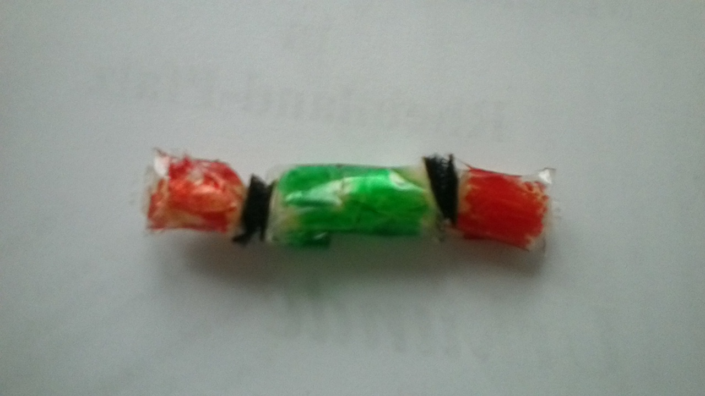

Zunächst wird an das große Molekül das kleine angefügt. In einer weiteren Reaktion entstehen die "Dreiecke" an den Enden. Da die natürlichen Winkel der Elektronenpaarbindungen der Atome in diesen "Dreiecken" nicht zusammenpassen, stehen sie unter Spannung und verbinden sich so "gerne" mit anderen Molekülen wie einem Härter.

In einer weiteren Reaktion kann man das Molekül noch "verlängern", indem man es noch einmal mit dem ersten Molekül reagieren lässt. Will man das Harz als Kleber nutzen, ist dies allerdings nicht der Fall, da es, wenn es mehr als einmal verlängert wurde, direkt ein Feststoff ist und sich deshalb nicht mehr härten lässt. Dieses Phänomen liegt daran, dass die OH-Gruppe oben links in der eckigen Klammer eine Wasserstoffbrückenbindung mit der OH-Gruppe der anderen Harze eingeht. Passiert das zu oft, sind die Harz-Moleküle schon so stark verbunden, dass ein Feststoff entsteht. Dieser wäre dann ein (sehr kurzer) Thermoplast.
Im folgenden Rechner kann man durch die Eingabe der Anzahl der Reaktionen die Summenformel des entstandenen Epoxidharzes berechnen:
So sehen die Harze im Modell aus